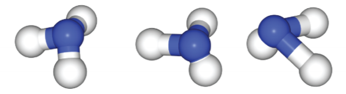

Visualizing Uncertainty in Molecular Simulation
By Aik Jun Tan, Daniel Schwalbe-Koda, and Franklin Morgan
↓ SCROLL TO BEGIN ↓
Understanding material behavior
A potential energy surface (PES) describes the energy of a system based the configuration of atoms within it. PESes are crucial in the study of materials science for understanding how materials will behave under varying conditions.
Creating accurate models of these PESes means we can discover and use better materials in many different applications--from characterizing drug activity and toxicity, to creating stronger steel compositions for spacecrafts!
Traditionally, "brute force" methods such as ab initio molecular dynamic simulations are used to map potential energy surfaces. However, these methods are computationally expensive, and are cost-prohibitive for larger and more complex materials systems.
Recent advances in machine learning techniques allow for high-accuracy predictions in less time and at lower costs.
Let's take a look at how this works...
Neural networks
One machine learning technique, the neural network (NN), is especially well suited to handle the extensive datasets needed to train PESes for complex materials.
NNs is typically trained on data from ab initio molecular simulations, which are considered the "ground truth" result for these predictions.
The trained neural network are then used to make predictions on that system's potential energy surface. This allows us to quickly predict material behavior for configurations that have not been explicitly tested.
But are these predictions accurate?
Prediction uncertainty in neural networks
There is always some uncertainty in the predictions made by neural networks. Consider the neural network to the right, which classifies whether an input image represents a dog or a cat.
Hover over three different input photos to see how the network makes a prediction under uncertainty:

Neural networks predicting potential energy surfaces face similar challenges to those outlined in the example above. While the algorithm predicts data between existing data points very well (similar to the cat and dog), it may fail catastrophically for rare events for which we have little to no data (similar to the bird).
Hover over the three different input geometries to see how the network makes a prediction under uncertainty:

One problem, therefore, is: how to assess the reliability of neural network predictions?
Uncertainty Quantification
Instead of using a single neural network to make predictions, we can use an ensemble of neural networks. When the data is well-represented in the training set, the neural network committee predicts a single value with low uncertainty. On the other hand, when the data is not well-known, the NNs will disagree on the predicted property, thus leading to a higher uncertainty.
In the case of molecular simulation, it is more interesting to use uncertainty in the predicted forces instead of predicted energy.
Now, the follow-up question: how do we improve the robustness of neural networks for atomistic simulations?
Adversarial Attacks
Improving the robustness of neural network potentials requires increasing the breadth of their training sets; however, gathering this data usually requires time-consuming and costly simulations. It is therefore crucial to only gather data that will significantly improve the model's ability to make accurate predictions.
We use the concept of adversarial attacks from the machine learning literature to find which points the NNs fail to predict. In atomistic simulations, that corresponds to adding a small disturbance δ to the input geometry and finding which are the distortions that maximize the uncertainty of the neural network committee. This optimization can be done by simply calculating the gradients of the uncertainty with respect to δ.
Next, we exemplify how this method works...
Exemplifying adversarial attacks
Consider a 2D potential energy surface such as the one shown on the right. A toy example could be the 2D double well, which is a potential having two energy states. We can train a neural network committee to predict this potential energy surface and then analyze the energies and forces predicted by the committee.
Say that, after training the neural networks, we obtain the predictions and uncertainties on the right. The plot on the left indicates the mean energy predicted by the ensemble, while the plot on the right depicts a metric of uncertainty.
The neural networks were trained by having very little information about the rightmost basin of the double well, but several data points on the left basin. As a consequence, the uncertainty is much higher on the right than on the left.
A point close to the training set is likely to have low uncertainty and a reliable PES. The NNs know this region well, and the committee agrees on which should be the predicted energy/forces.
An adversarial attack consists of distorting any predicted point to maximize the predicted uncertainty, i.e. the disagreement between the NNs. This point is likely to not be well-represented in the training set, and should be the most informative to calculate using more expensive methods.
How do we incorporate learnings from adversarial attacks back into the original model?
Active Learning
To improve the performance of the neural network predictions, we can repeat this process in what is called an active learning loop. We start by gathering the data from a training set and training the NNs. Then, we find which are the points that maximize the committee uncertainty and send the new data for evaluation. By repeating this process, we successively improve the predictions of the NNs for the PES without human intervention.
This process is a new sampling strategy for obtaining distorted configurations of molecules and improving training sets for NN potentials, and holds promise for automatic potential fitting with low data.
References
This visualization was based on the data from the following preprint:
D. Schwalbe-Koda, A.R. Tan, R. Gómez-Bombarelli.
Differentiable sampling of molecular geometries with uncertainty-based adversarial attacks. arXiv:2101.11588 (2021).
The visualization of the NN classifier for cats/dogs was based on a post by S. Bachstein.
Beyond this 6.859 MVP
Future Work
In the upcoming weeks, we plan to add visualizations to show how predictions are improved using this method and interactions to help the readers better understand these concepts.
We also plan to explore ways to visualize the uncertainty in performance of these improved machine learning approach.
Questions & Feedback
We'd love to get your input on the work done so far. A few questions we have are:
- What interactions do you feel would be useful to better engage with this content?
- Is the scrollytelling effective or can it be improved?
- Is the text per section too much, too little or just right?